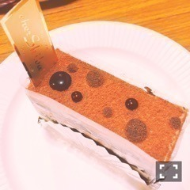

| 2016/10 16 Sun | 斎藤ちはる 純。 |
ちはるーむへようこそ！
髪の毛が明るくなりすぎてしまい
久しぶりに会ったおばあちゃんに
「ロシアの人みたいねぇ！いや、でも顔はインドかしら？ははは」
と言われ、国籍がいよいよ
分からなくなってきました。
日本です。
純日本人です。
ヽ(；；)丿
懐かしいの見つけた...(｡･o･｡)ﾉ
斎藤ナマステ。
-------------------------♡
◎ChihaFood
少し前の名古屋の握手会で
差し入れで頂いたケーキ！
「chez Shibata」さんの。

ケーキの中ではチョコケーキが一番好きなので
真っ先に選びました！
とても美味しかったのですが
いまホームページを見て調べたら
このケーキはもうないのかな...？？
もしかしたらないのかも...
もう食べられないと思うと寂しいです(o_o)
でも別のケーキも美味しそうなの沢山あったので
今度はそのケーキ食べたいなあ( ´ｰ`)♡
名古屋に来た際、
名古屋の皆さんは是非！！
-------------------------♡
♬ ChihaMusic
「アイデンティティ」サカナクションさん
サカナクションさんの個性も
リズムも声も全て好きだけど
この曲の歌詞が本当に好き。
それぞれが思い悩む気持ちを
上手に表されていてかっこいい。
"どうしてまだ見えない自分らしさってやつに
朝は来るのか"
"どうして見えなかった自分らしさってやつに
解りはじめた"
1番と2番の歌詞のラストの
変化も好き。
アイデンティティとは何か。
墓女見終わった後に
絢音ちゃんに良かったよ！と伝えたら
困り笑顔で親指グッ！と立ててくれた◎
可愛いd(￣ ￣)
おやすみ〜
斎藤ちはる